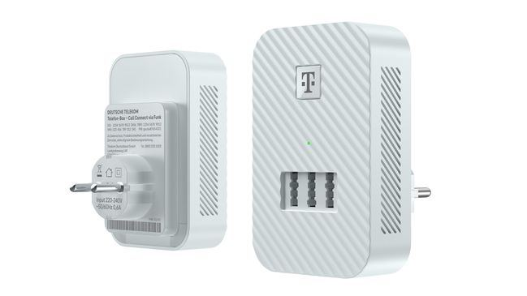
Telekom startet Festnetz-Telefonie über MobilfunkAusgabe vom 19. August 2026
Alle Meldungen
Netz & Technik
 Roaming-eSIMs wachsen, Leistung schwankt stark
Roaming-eSIMs wachsen, Leistung schwankt stark
Tarife & Angebote
 O2 setzt in Spanien 15 GB für 5 Euro
O2 setzt in Spanien 15 GB für 5 Euro
 O2 kontert Digi mit 5-Euro-Mobilfunktarif
O2 kontert Digi mit 5-Euro-Mobilfunktarif
 e& UAE integriert agentische KI in Mobil- und Breitbandprodukte
e& UAE integriert agentische KI in Mobil- und Breitbandprodukte
Satellit & Direct-to-Cell
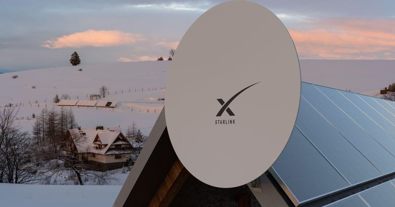
Shentel warnt vor Starlinks versteckten Kosten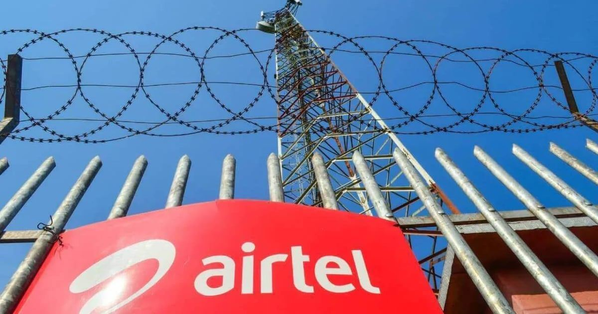
Airtel Africa startet Satelliten-Mobilfunk im KongoRegulierung & Politik
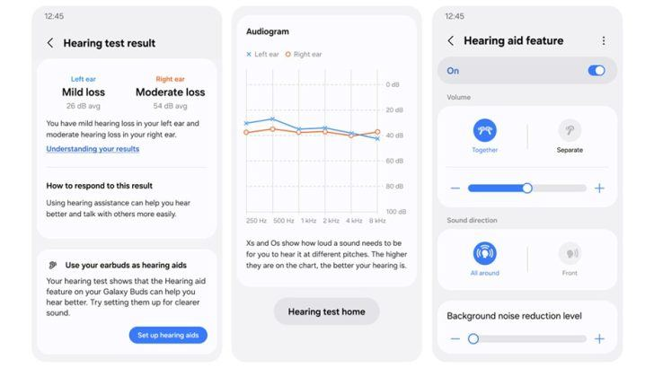
US-Gesundheitsbehörde lässt Samsung-Hörhilfe für Galaxy Buds zuGeld & Übernahmen
Partnerschaften
Vermischtes
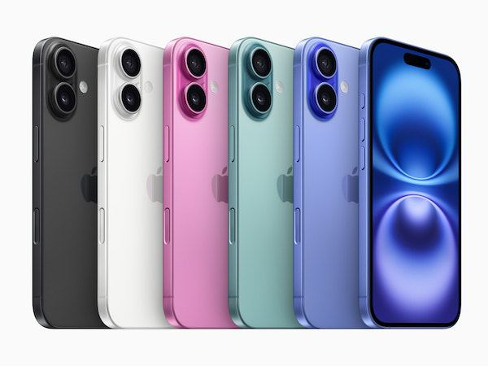
Smartphone-Absatz faellt wegen Speicherkrise um 7 Prozent Free begrenzt TV-Zugriffe und Konto-Sharing
Free begrenzt TV-Zugriffe und Konto-Sharing
Netz & Technik
66 Meldungen
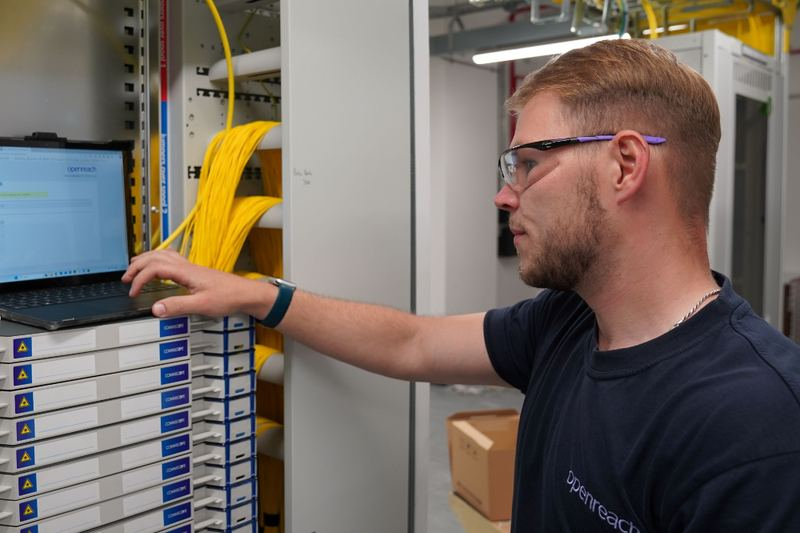
Openreach hebt Full Fibre auf bis zu 8,5 Gbit/s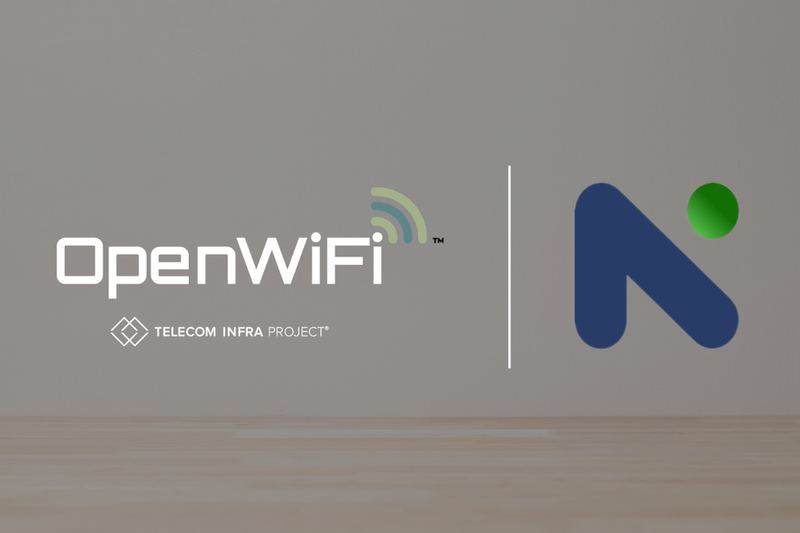
OpenWiFi zeigt Analyse direkt auf dem Access PointAuch berichtet von Developing Telecoms
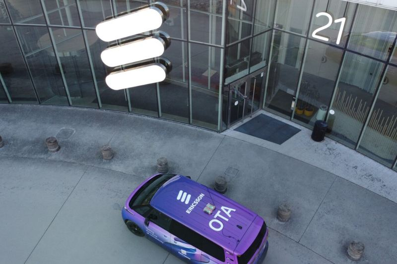
Erste 5G-Ortung unter 30 Zentimeter getestet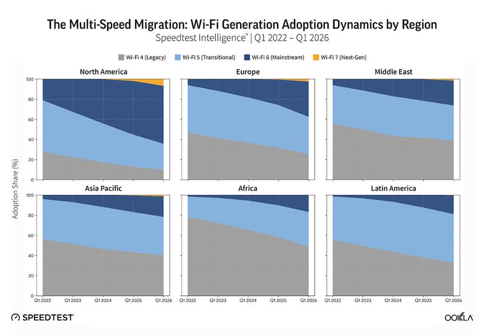
Ookla: Europa bleibt bei Wi-Fi 7 zurück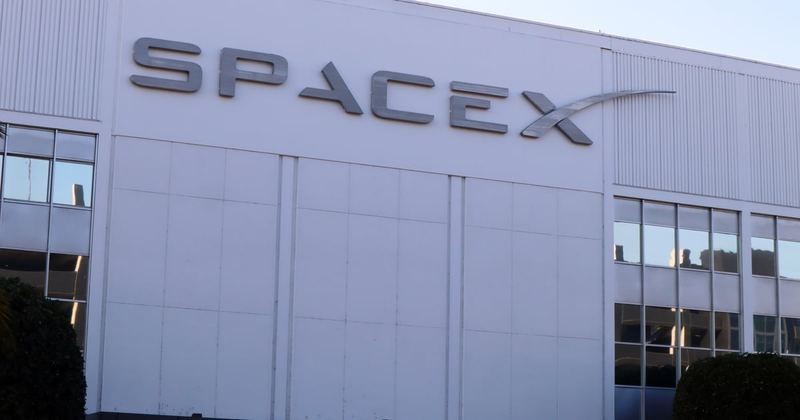
Studie kühlt SpaceX' Small-Cell-Plan weiter ab KI-Anwendungen sollen Frontend-Netzausbau mit fast 40 Prozent antreiben
KI-Anwendungen sollen Frontend-Netzausbau mit fast 40 Prozent antreiben
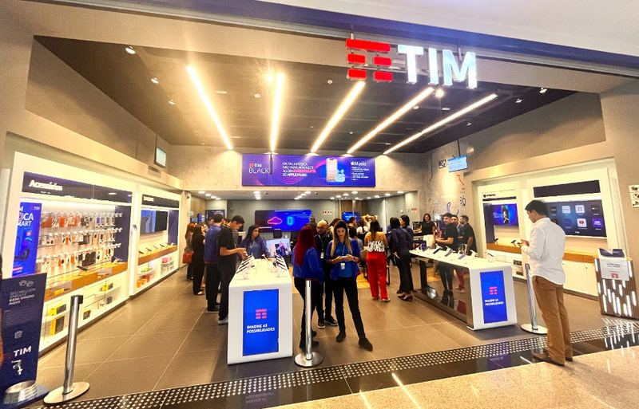
TIM meldet 80 Millionen Open-Gateway-API-Anfragen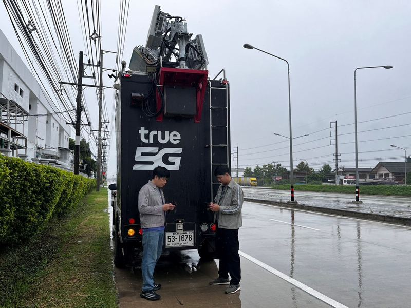
True verteidigt Netze bei Flut in NordthailandAuch berichtet von Total Telecom
Auch berichtet von Telecoms.com
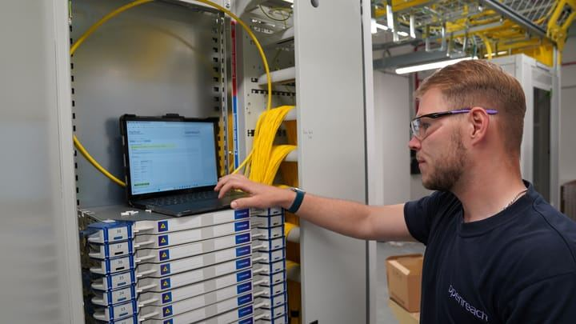
Openreach plant XGS-PON-AusbauAuch berichtet von ISPreview UK
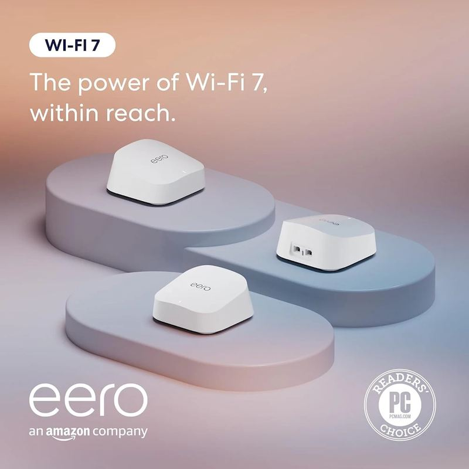
KCOM setzt bei Breitbandkunden auf Amazons Wi-Fi-7-RouterAuch berichtet von Developing Telecoms
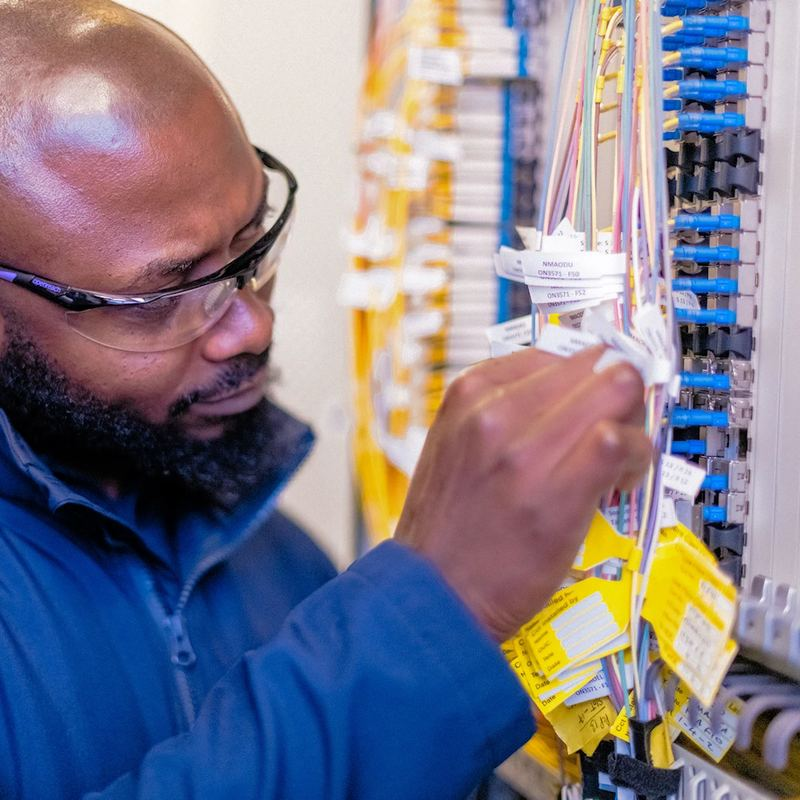
Openreach startet Optik-Links mit 1,6 Terabit pro SekundeAuch berichtet von The Fast Mode
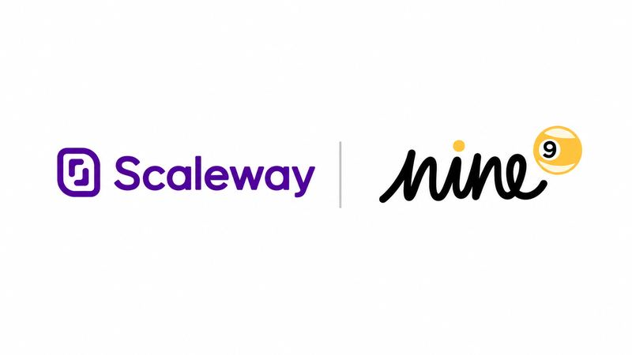
Iliad-Tochter Scaleway tritt Internet-Knoten Nine bei Kabelnetz-Ausbau und Zukäufe nehmen Fahrt auf
Kabelnetz-Ausbau und Zukäufe nehmen Fahrt auf
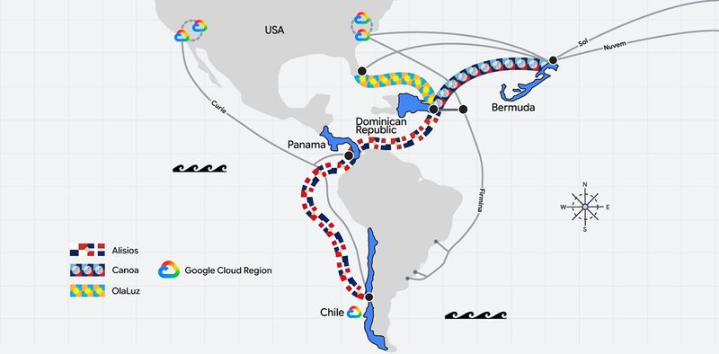
Google Cloud baut drei neue Unterseekabel nach AmerikaAuch berichtet von Developing Telecoms
Tarife & Angebote
82 Meldungen
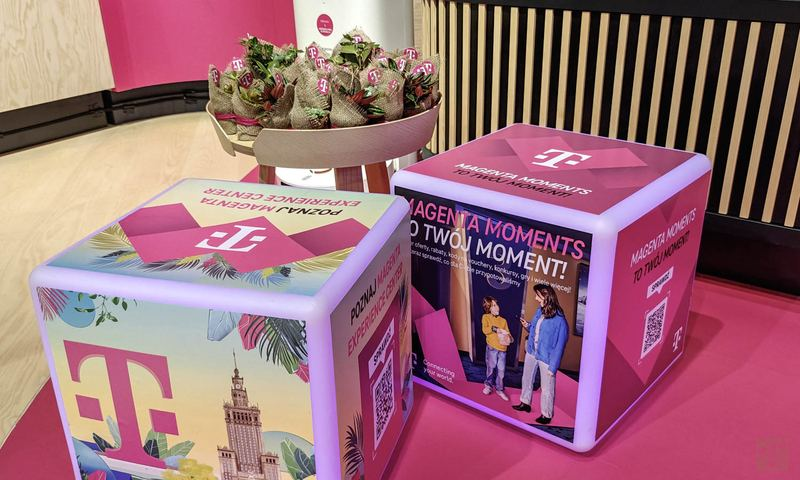
T-Mobile Polen schenkt 60 Tage kostenlose NavigationAuch berichtet von Broadband TV News
 Kena Mobile: 200 Giga für 29,99 Euro sechs Monate
Kena Mobile: 200 Giga für 29,99 Euro sechs Monate
 Spanien: Fußball-Gesamtpaket startet bei 103 Euro
Spanien: Fußball-Gesamtpaket startet bei 103 Euro
 Plus/Polsat Box bündelt drei Streamingdienste für 40 Zloty
Plus/Polsat Box bündelt drei Streamingdienste für 40 Zloty
 Bouygues Telecom rabattiert Konsolen stark für GTA VI
Bouygues Telecom rabattiert Konsolen stark für GTA VI
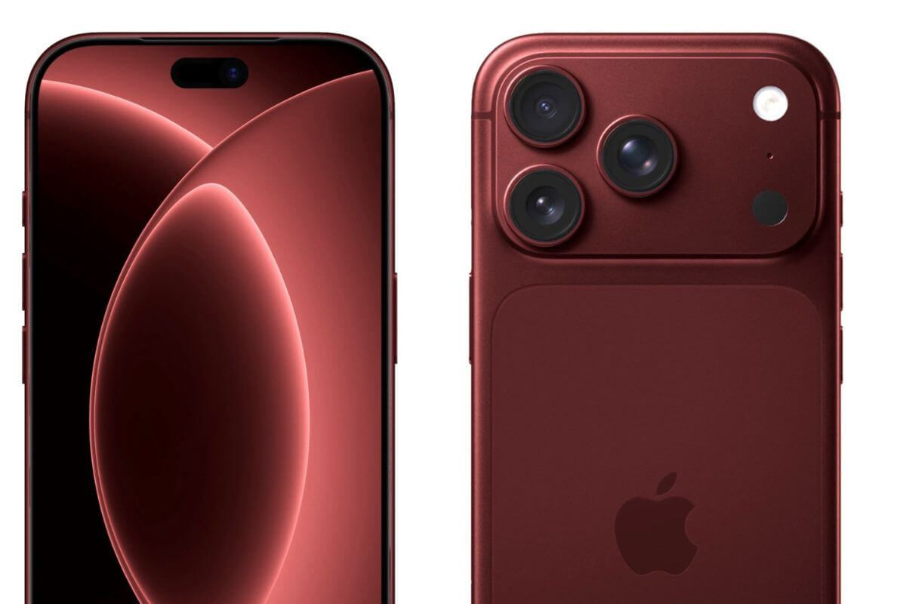
iPhone 18 Pro Launch im September erwartet Netia bündelt CANAL+ Ultra und vier Streamingdienste gratis
Netia bündelt CANAL+ Ultra und vier Streamingdienste gratis
Auch berichtet von Comcast
 Freebox-Kunden bekommen drei PC-Spiele über Amazon Luna
Freebox-Kunden bekommen drei PC-Spiele über Amazon Luna
Auch berichtet von Mobile World Live, Telecoms.com, Fierce Network
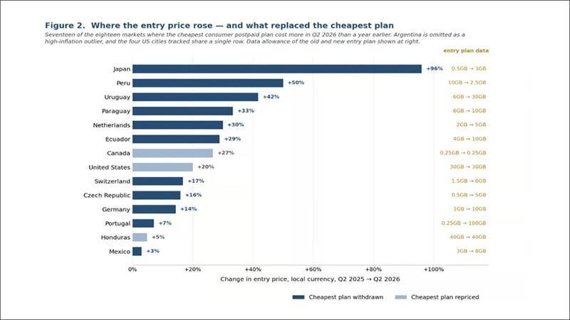
Günstige Postpaid-Einstiege verschwinden laut Tarifica Turkcell startet Omnichannel-Ansatz mit KI-Assistent Teknocan
Turkcell startet Omnichannel-Ansatz mit KI-Assistent Teknocan
Auch berichtet von Google Pixel
Auch berichtet von MTN Group
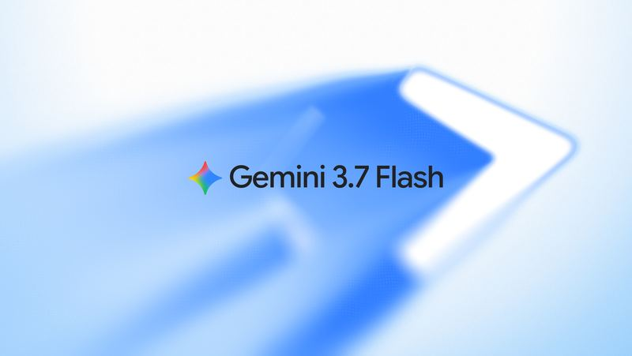
Google DeepMind bringt Gemini 3.7 Flash herausAuch berichtet von Google Pixel
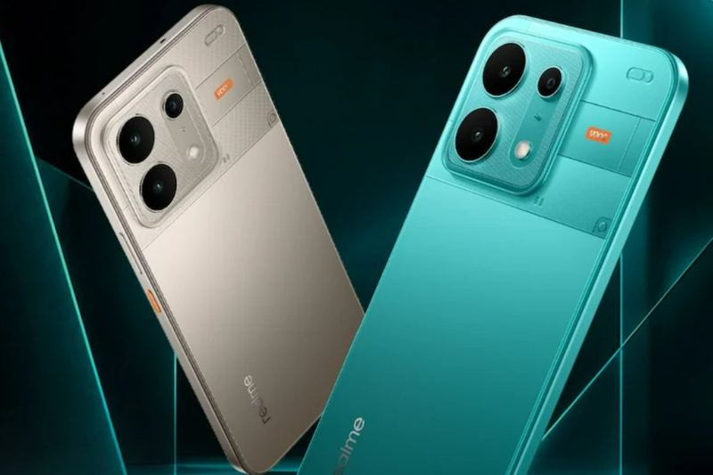
Realme P4s 5G startet in Indien am 26. AugustAuch berichtet von TelecomLead (Indien)
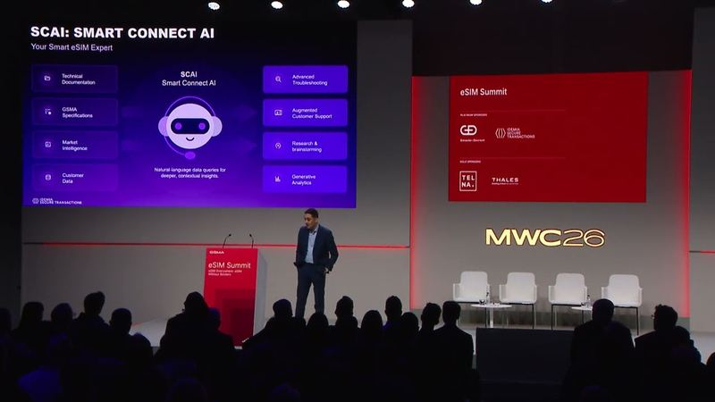
IDEMIA zeigt KI-Agenten für eSIM-Betrieb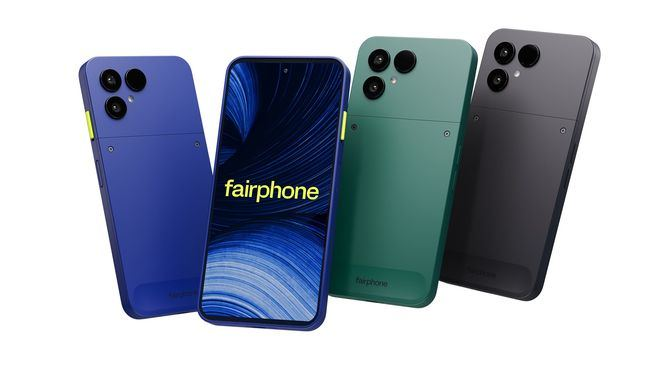
Fairphone bringt 6+ mit schnellerem Prozessor und mehr RAM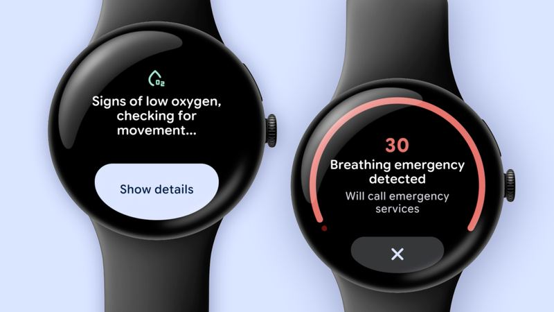
Pixel Watch erkennt Atemstillstand und alarmiertAuch berichtet von Google Pixel
Auch berichtet von The Fast Mode
AT&T Business startet EdgeVis Cloud für Live-Video
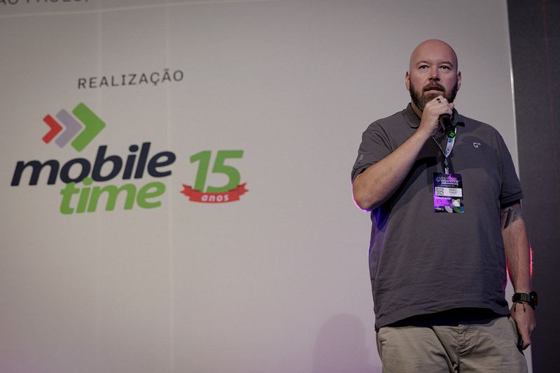
Getnet macht Bezahlterminals zum KI-Garçom
Satellit & Direct-to-Cell
30 Meldungen
 AST SpaceMobile bleibt Partner der Netzbetreiber, Start 2027
AST SpaceMobile bleibt Partner der Netzbetreiber, Start 2027
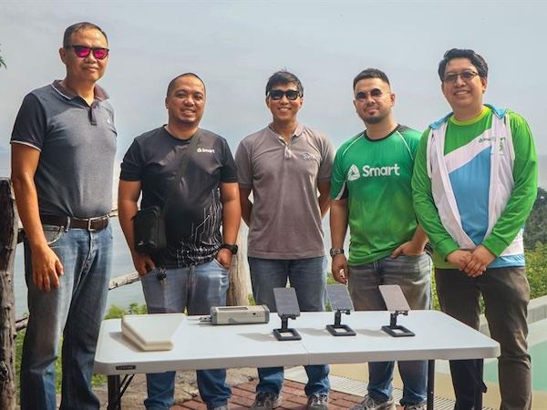
Smart testet Satelliten-Direktverbindung in BatangasAuch berichtet von TelecomLead (Indien), The Fast Mode
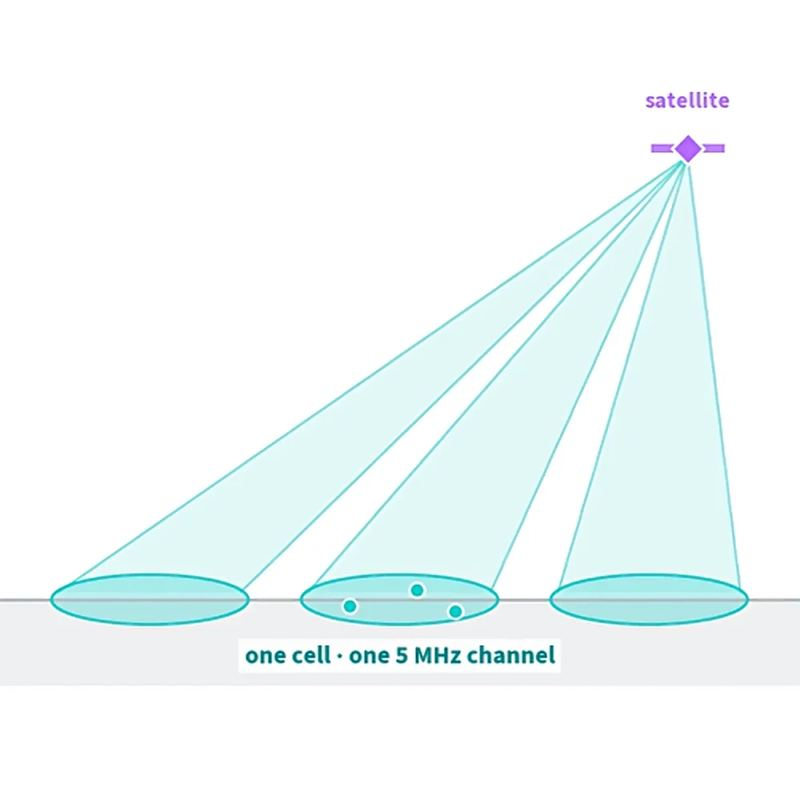
Ookla vermisst Starlinks Direct-to-Cell-Beams mit Smartphone-Daten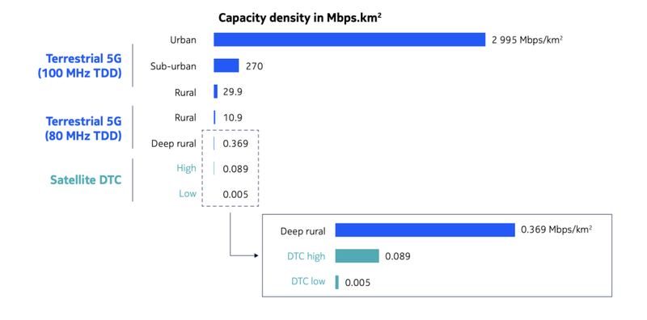
Satelliten ersetzen terrestrische Netze nicht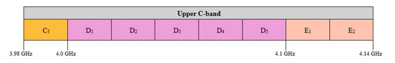
USA versteigern 160 Megahertz C-Band ab April 2027 Großbritannien fördert Satellitenkommunikation mit 13 Millionen Pfund
Großbritannien fördert Satellitenkommunikation mit 13 Millionen Pfund
Auch berichtet von The Fast Mode
Regulierung & Politik
44 Meldungen
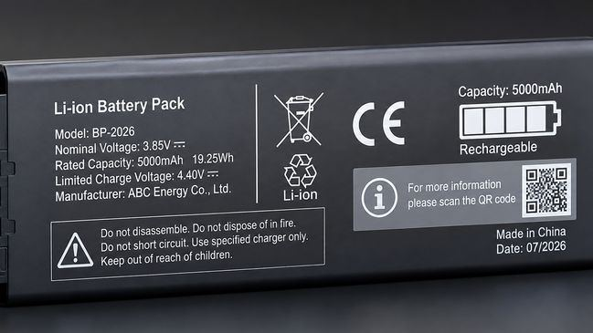
EU-Batterieverordnung: neue Pflichten für Händler ab 18. AugustAuch berichtet von Developing Telecoms
Auch berichtet von TeleSíntese (BR)
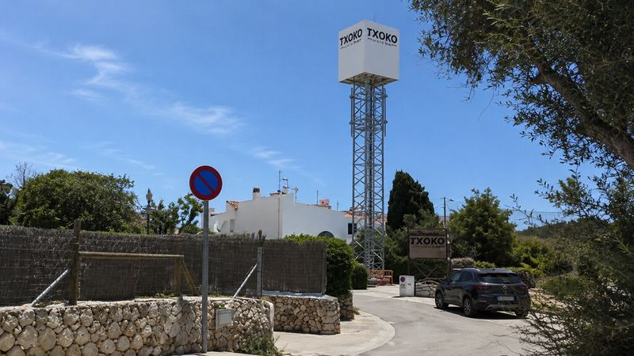
Menorca: 23-Meter-Mast von Orange bleibt trotz ProtestenAuch berichtet von Mobile World Live
Auch berichtet von Light Reading
Auch berichtet von Telecom Review Africa
 Please-Call-Me-Millionen belasten den Retter von Raining Men
Please-Call-Me-Millionen belasten den Retter von Raining Men
Auch berichtet von TELETIME (Brasilien)
Geld & Übernahmen
26 Meldungen
Auch berichtet von TELETIME (Brasilien), TelecomTV, Mobile World Live, Telecoms.com, Light Reading, TeleSíntese (BR), Developing Telecoms
Auch berichtet von Light Reading, Fierce Network
 Telekom kauft Fiberhost und Inea für eine Milliarde Euro
Telekom kauft Fiberhost und Inea für eine Milliarde Euro
Auch berichtet von Mobile World Live
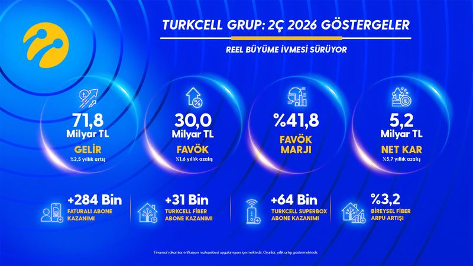
Turkcell wächst mit 5G und drahtlosem FestnetzAuch berichtet von Capacity Media
Auch berichtet von China Mobile
Auch berichtet von Telecoms.com
Partnerschaften
25 Meldungen
Auch berichtet von TELETIME (Brasilien), Telecoms.com, TelecomTV
Auch berichtet von Mobile Europe
Auch berichtet von TelecomTV
Auch berichtet von Vodafone UK
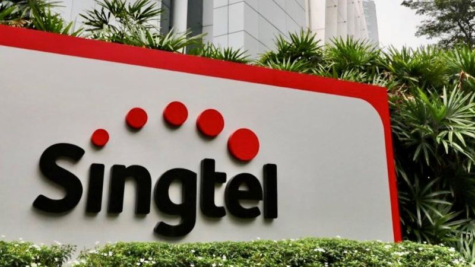
Vodafone-Beschaffung gewinnt Sprach-Deal mit Telenor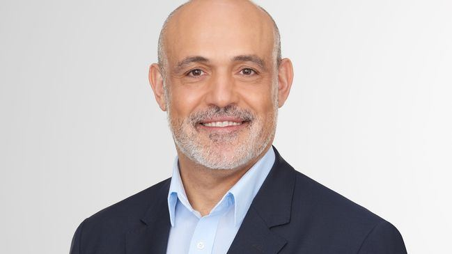
Ingram Micro nimmt Dten-Videokonferenzlösungen ins Portfolio
Vermischtes
38 Meldungen
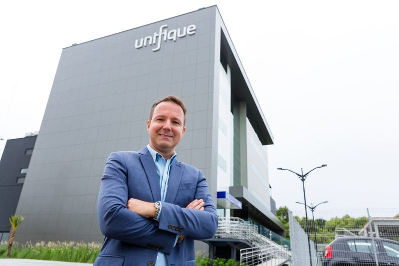
Unifique: Festnetz-Wettbewerb härter als Mobilfunk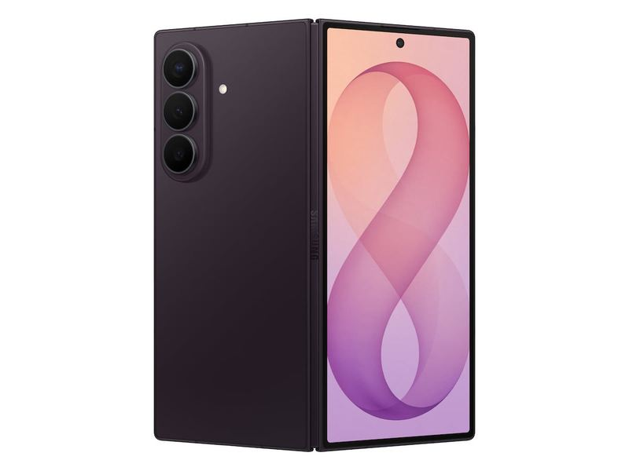
Samsungs Fold8 Ultra verliert schnell über 800 Euro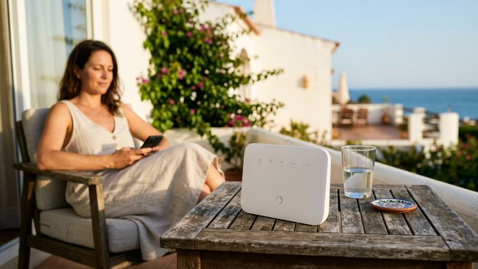
Mobile Daten ersetzen in Ferienhäusern zunehmend WLAN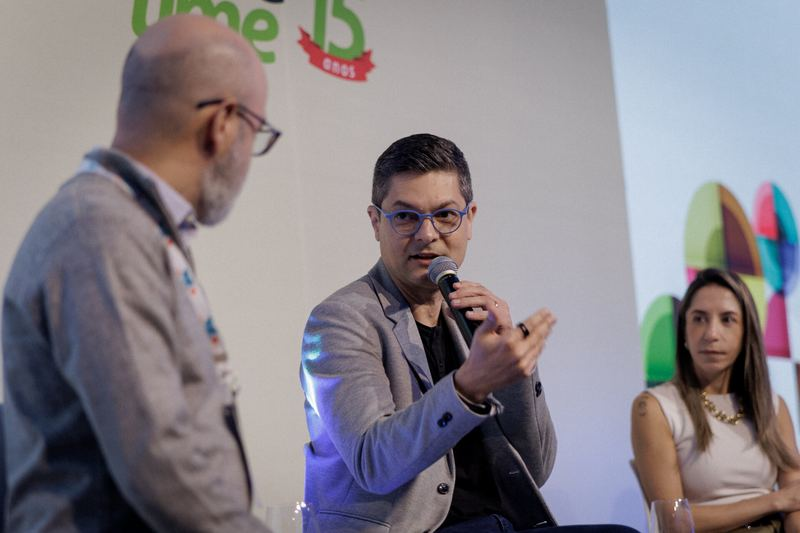
Bradesco-KI-Assistentin BIA erreicht vier Millionen Monatskunden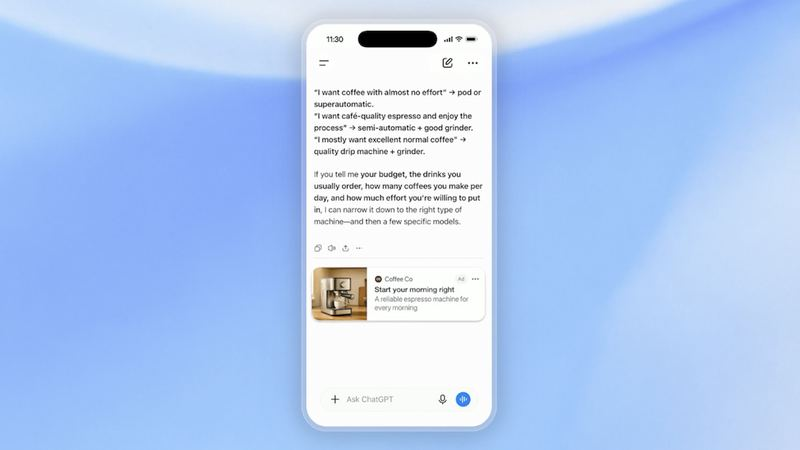
ChatGPT zeigt nun auch in Spanien WerbungFrühere Ausgaben
19. August 2026
926 neue Meldungen
17. August 2026
897 neue Meldungen
15. August 2026
810 neue Meldungen
14. August 2026
944 neue Meldungen
8. August 2026
256 neue Meldungen
7. August 2026
381 neue Meldungen
6. August 2026
642 neue Meldungen
5. August 2026
426 neue Meldungen
4. August 2026
124 neue Meldungen
31. Juli 2026
220 neue Meldungen
28. Juli 2026
9 neue Meldungen
27. Juli 2026
49 neue Meldungen
26. Juli 2026
4 neue Meldungen
25. Juli 2026
11 neue Meldungen
21. Juli 2026
185 neue Meldungen
20. Juli 2026
27 neue Meldungen
19. Juli 2026
233 neue Meldungen
17. Juli 2026
257 neue Meldungen
16. Juli 2026
1991 neue Meldungen